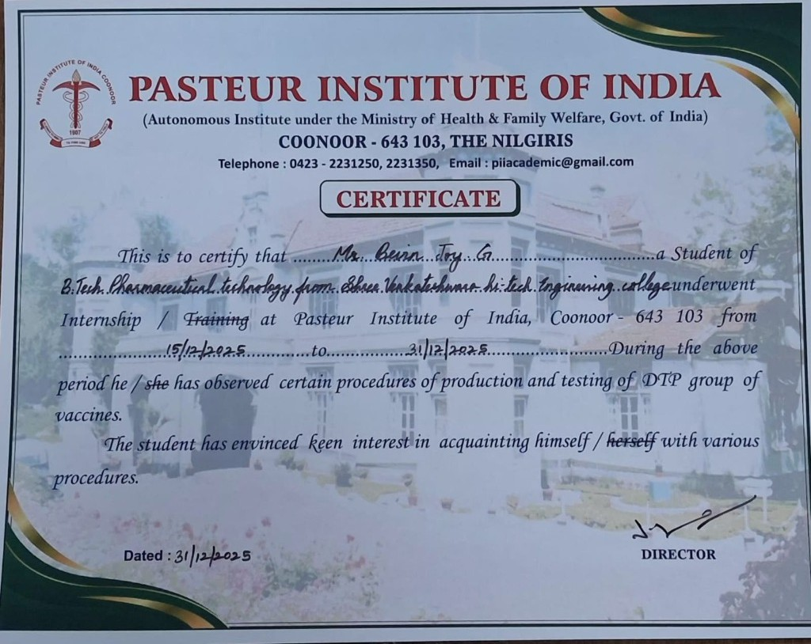
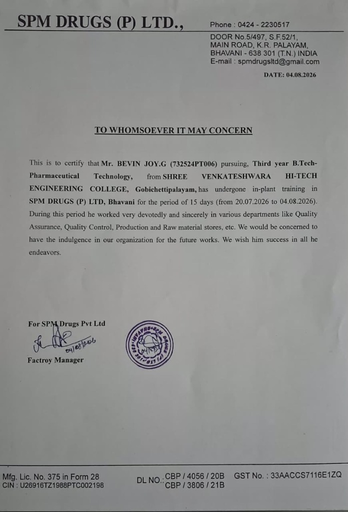
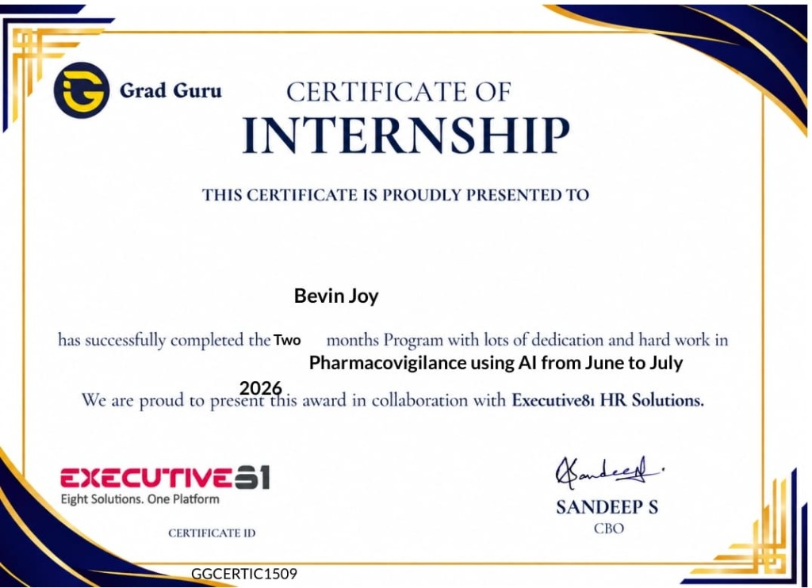
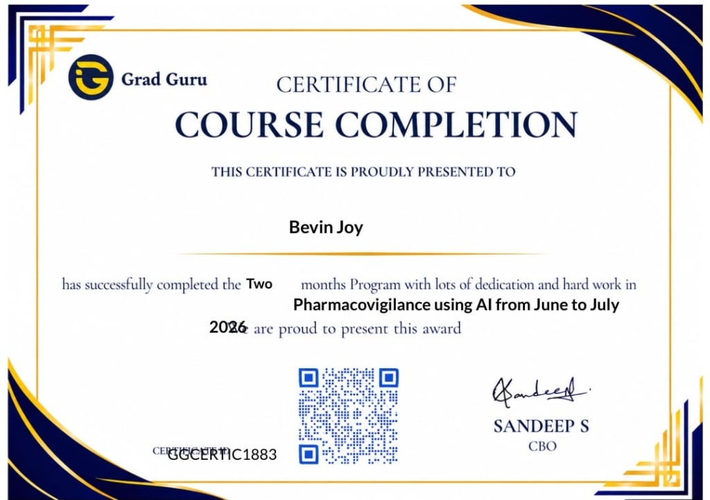
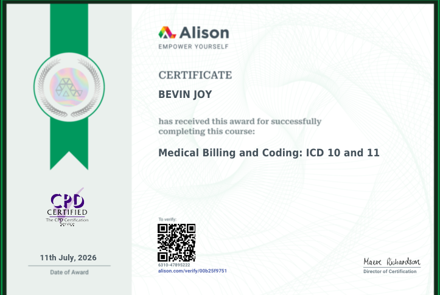
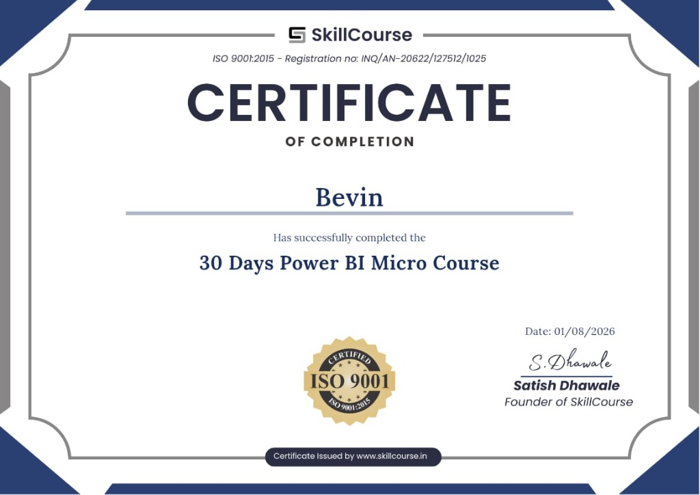

About Me
Pioneering Pharma-Tech Innovation
I am a dedicated 3rd-year B.Tech Pharmaceutical Technology student at Shree Venkateshwara Hi-Tech Engineering College (Anna University), focused on bridging classical pharmaceutical formulation with cutting-edge computational intelligence.
My primary research interests span Artificial Intelligence, In-Silico Drug Discovery, Pharmacovigilance, and Molecular Modeling. Having established strong working fundamentals in machine learning and bioinformatics, I engineer accessible software tools that support drug-likeness screening, evaluate molecular descriptors, and enhance adverse reaction tracking.
With verified in-plant exposure at the apex Pasteur Institute of India, Coonoor (observing DTP vaccine manufacturing and quality testing), commercial industrial training at SPM Drugs (P) Ltd. (QA/QC, production and inventory stores), and certified specialized training with Grad Guru & Executive81 in Pharmacovigilance using AI, I combine strict regulatory compliance with modern algorithmic execution.
AI & Machine Learning
Applying predictive algorithms, descriptor classifiers, and exploratory data analysis to evaluate chemical compound viability and receptor affinity.
In-Silico Drug Discovery
Screening hit candidates using Lipinski's Rule of Five, molecular docking, and SwissADME pharmacokinetic profiles for preliminary bioavailability.
Pharmacovigilance & Safety
ADR case reporting, MedDRA dictionary classification, individual case safety reports (ICSR), and adverse reaction risk profiling.
Pharmaceutical Tech & cGMP
Vaccine production exposure, sterile cleanroom protocols, quality control/assurance (QA/QC), and strict documentation compliance.
Formal Education
B.Tech in Pharmaceutical Technology
Core Academic Modules & Research Focus
Technical Skills
A balanced repertoire spanning pharmaceutical sciences, wet-lab compliance, in-silico computational tools, and web-based algorithmic programming.
Formulation principles, industrial dosage forms, aseptic processing, and pharmaceutical unit operations.
Biological sequence analysis, structural alignment, macromolecular databases (PDB, UniProt, PubChem).
Supervised learning, classification for molecular screening, feature extraction, and exploratory analysis.
Adverse Drug Reaction (ADR) monitoring, MedDRA terminology, ICSR triage, and post-market safety regulations.
Target validation, hit-to-lead identification, physicochemical descriptor assessment, and Lipinski compliance.
Pharmacokinetics, GI absorption, BBB permeation, synthetic accessibility score, and bioavailability radars.
Receptor-ligand binding affinity evaluation, active-site conformational search, and binding energy analysis.
Semantic web architecture, responsive layouts, scientific dashboards, and accessible user interfaces.
Relational schema design, chemical structure datasets (JSON/CSV), compound indexing, and query fundamentals.
Featured Projects
Rigorous, authentic computational projects advancing in-silico drug candidate assessment, pharmacovigilance tracking, and molecular property evaluations.
AI-Based Drug Candidate Screening and Prediction System
A web-based drug candidate screening platform using molecular descriptors, Lipinski's Rule of Five, and JavaScript-based prediction logic to support preliminary drug-likeness assessment. Evaluates Molecular Weight (MW), Octanol-Water Partition Coefficient (LogP), Hydrogen Bond Donors (HBD), Hydrogen Bond Acceptors (HBA), and Rotatable Bonds to classify compounds for oral bioavailability.
AI Pharmacovigilance Dashboard
An AI-assisted pharmacovigilance dashboard for adverse drug reaction (ADR) reporting, case management, and severity classification. Features structured reporting workflows, MedDRA dictionary classification aids, risk categorization, and triage tracking to accelerate post-marketing drug surveillance.
SwissADME Drug Analysis
A computational drug analysis project focusing on physicochemical properties, pharmacokinetics, and drug-likeness evaluation. Evaluates gastrointestinal (GI) absorption, blood-brain barrier (BBB) permeation, P-glycoprotein substrate interactions, cytochrome P450 inhibition profiles, and bioavailability radars.
mediqr-ai: Multilingual AI Medicine Accessibility
A multilingual, AI-powered QR-based medicine information and accessibility platform with voice assistance and a source-backed drug information system, providing patients and pharmacists with instantaneous dosage, safety, and contraindication guidance.
Professional Experience
Direct industrial exposure and rigorous certified training across vaccine manufacturing, commercial pharmaceutical plants, and pharmacovigilance safety operations.
Vaccine Production & QA/QC Industrial Trainee
Completed industrial internship and hands-on training at one of India's apex vaccine institutes under the Ministry of Health & Family Welfare. Gained comprehensive practical knowledge in sterile vaccine manufacturing, biological QA/QC, and regulatory documentation.
- Vaccine Production Workflow: Observed production and testing procedures for the DTP (Diphtheria, Tetanus, Pertussis) group of vaccines.
- Cleanroom & Aseptic Processing: Class A/B/C/D cleanroom protocols, laminar airflow workstations, and sterilization validation.
- cGMP & Documentation: Equipment qualification (DQ/IQ/OQ/PQ), batch manufacturing records (BMR), and audit trails.
- Quality Assurance & Control: In-process sterility testing, bioburden assays, endotoxin tests (LAL), and cold-chain compliance.
Pharmaceutical In-Plant Industrial Trainee
Immersive 15-day industrial in-plant training at SPM Drugs (P) Ltd., gaining hands-on exposure across commercial drug manufacturing, laboratory quality controls, and warehouse storage operations.
- Quality Assurance & Control: In-process inspection, finished product testing, and batch record reviews in QA/QC labs.
- Production Floor Operations: Solid oral and liquid dosage form manufacturing, mixing, tableting, and packaging lines.
- Raw Material Stores & Inventory: Material receipt protocols, quarantine management, sampling, and dispensing compliance.
Pharmacovigilance using AI Trainee & Intern
Comprehensive certified professional training and internship program in Pharmacovigilance with AI integration, covering automated ADR case processing and safety intelligence.
- ADR Case Intake & Triage: Evaluation of adverse event reports, serious vs. non-serious event determination, and timeline compliance.
- MedDRA Coding: Medical Dictionary for Regulatory Activities (SOC, HLGT, HLT, PT, LLT) coding methodology.
- AI in Pharmacovigilance: Exploring machine learning classifiers for automated severity prediction and signal detection.
Certifications & Achievements
Authentic verified certificates and credentials from apex governmental institutes, pharmaceutical manufacturers, and professional training academies.

Vaccine Production & Testing Internship
Govt. of India autonomous institute certification validating observation and training in DTP group vaccine production, sterile cleanrooms, and testing procedures.

In-Plant Pharmaceutical Training & QA/QC
Formal in-plant training certificate covering devoted work across Quality Assurance (QA), Quality Control (QC), Production, and Raw Material Stores.

Internship: Pharmacovigilance using AI
Two-month intensive internship program award covering ADR surveillance, case processing, and AI tools in drug safety.

Course Completion: Pharmacovigilance using AI
Accredited certificate of course completion with scannable QR verification, validating competency in MedDRA coding, ICSR, and signal detection.

Medical Billing & Coding: ICD 10 and 11
Accredited certificate validating mastery of ICD-10 and ICD-11 medical coding standards, clinical classifications, and healthcare billing rules.

30 Days Power BI Micro Course
ISO-certified completion credential in Microsoft Power BI for healthcare data modeling, dynamic dashboard development, and analytical reporting.
Get In Touch
Open to research collaborations, internship opportunities in pharmaceutical research, AI-drug discovery initiatives, and pharmacovigilance roles.
Direct Contact Information
Feel free to reach out directly via phone, email, or LinkedIn. I am always keen to discuss computational chemistry, pharmaceutical formulation, and machine learning in medicine.